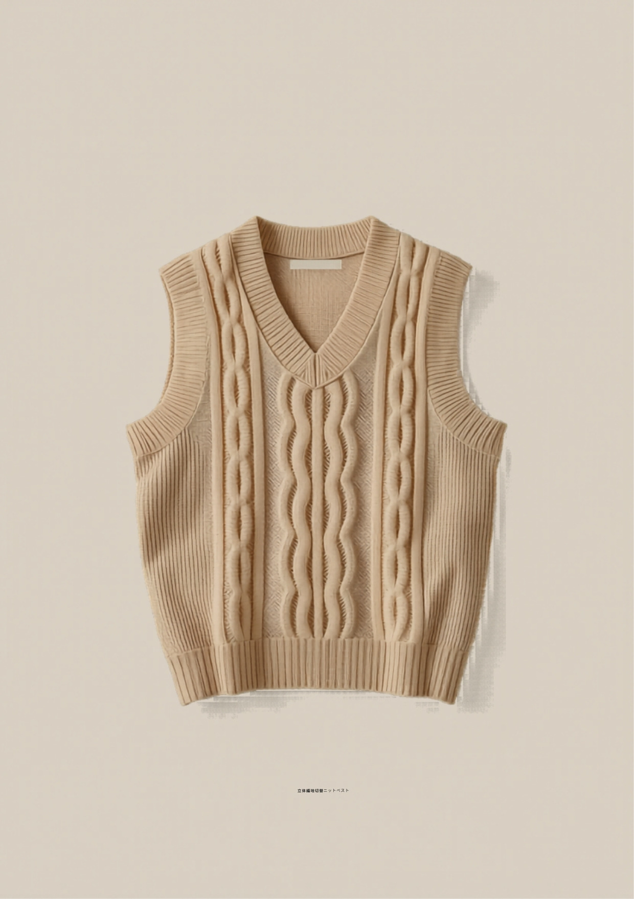
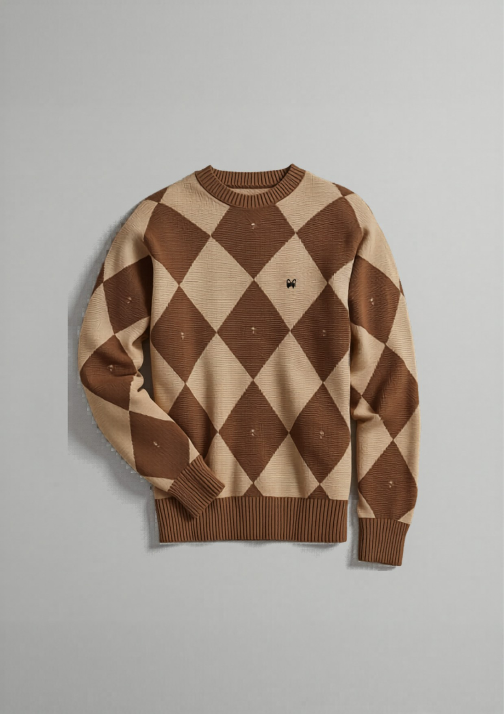
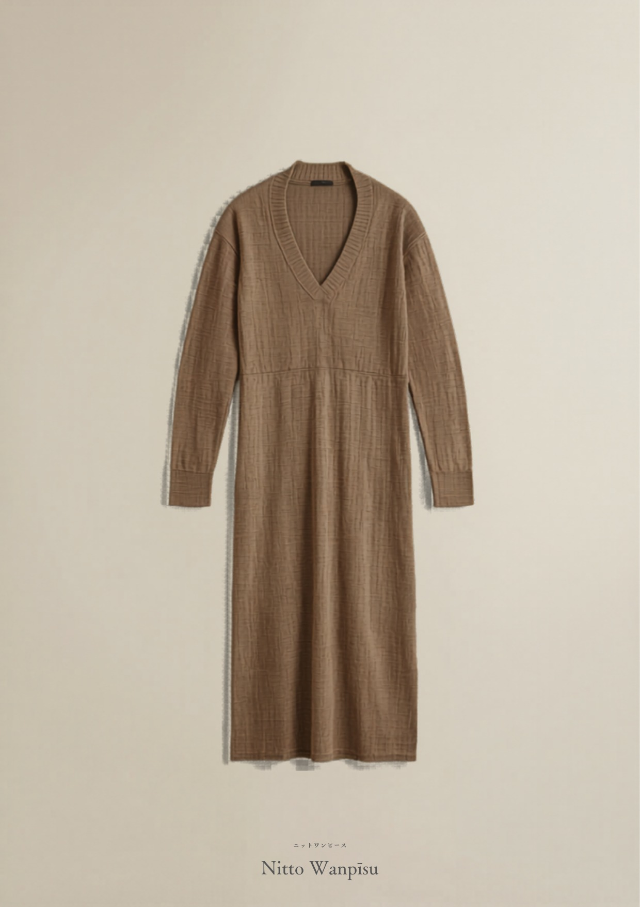
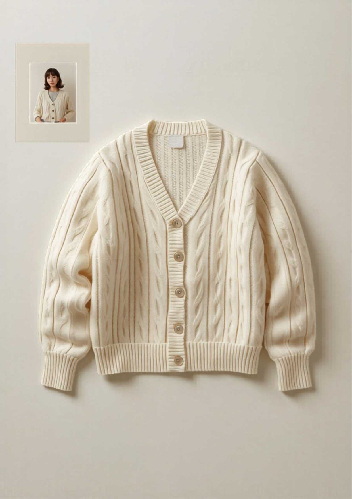
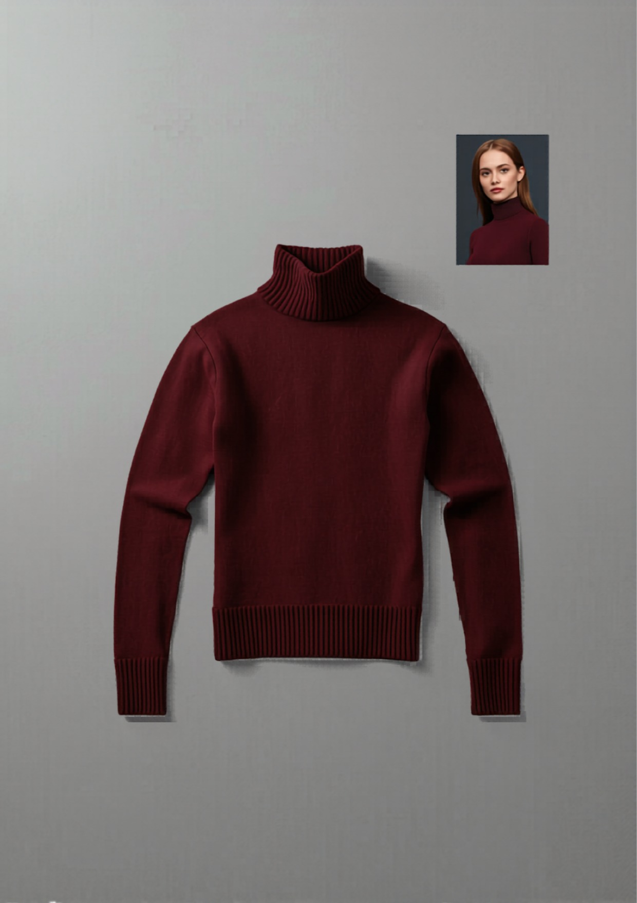

和
KNIT EXHIBITION ・ 2026–2027
ニット 展示会
サンプル企画書
ターゲット：30代から／レディース
テーマ：30代に刺さる“独自サンプル” ＋ 他社に難しい技術
価格：上代 〜5,000円（この技術を、この価格で）
収録：全9型
東和盛泰株式会社 TOUWASEITAI CO., LTD. ニット衣料 OEM・ODM
TEL 084-999-2390 ／ info@touwaseitai.com
東和盛泰株式会社TOUWASEITAI CO., LTD.
CONCEPT & LINEUP
本企画は、30代からの女性に実際に刺さり、かつ展示会でアパレルバイヤーに技術力が伝わるニットサンプルです。「定番もできる。その上で、他社が難しい編地もできる」を軸に、全9型をそろえました。
POSITIONINGこの技術を、この価格で。― 高度な編地を、上代〜5,000円で。
| No. | アイテム | 技術フック・特徴 | 30代に刺さる理由 | 上代 |
|---|
| 定番 | 洗えるリブポロ 定番 | 抗ピリング・きれいめ実用の量産品質 | 衿で顔まわりきれい・洗える | ¥2,990 |
| A | 透かしシアーカーディガン | 全面の透かし編み（移し目）の安定生産 | 肌見せ・羽織りで通年・SNS映え | 3,900〜
4,900 |
| B | 立体編地切替ベスト | ケーブル×リブ×メッシュの編地切替 | 体型カバー・ジレ通勤 | 3,500〜
4,500 |
| C | ジャカード柄ニット | 編み込み柄の柄出し精度・裏処理 | 柄でも上品・1枚で主役 | 3,900〜
4,900 |
| D | ニットワンピース | 長尺成型・ウエスト切替・型崩れ防止 | 1枚で様になる・体型カバー | ¥4,900 |
| E | 水色シースルー シアーニット | 透かし編み＋淡色の編み目均一 | 水色で顔映え・抜け感・SNS映え | 3,900〜
4,900 |
| F | ケーブルカーディガン | 立体ケーブルの編立・左右対称 | 羽織りで通年・定番人気 | 3,900〜
4,900 |
| G | ロングニットガウン | 長尺の度目安定・とろみドレープ | 羽織るだけで様になる・縦長効果 | 4,500〜
4,900 |
| H | タートルネック | ネック立ち上がりの成型 | 定番・きれいめ・首元あたたか | 2,990〜
3,900 |
※ 上代は想定。寸法・原価・度目は参考値で、確定はカウンターサンプル承認後とします。A・B・C(バイカラー版)・D(リブポロ)は別添の工業仕様図に詳細POMを記載。
東和盛泰株式会社TOUWASEITAI CO., LTD.
STANDARD
00
洗えるリブポロセーター
RIB POLO

- 素材
- アクリル60/ナイロン30/毛8/PU2（抗ピリング）
- 編み
- 2×2リブ／7GG
- 衿/袖
- リブ衿・2釦プラケット／長袖
- カラー
- 全5色
位置づけ：「定番もきちんと作れます」の証明枠。洗える・毛玉になりにくい実用品質で取引の入口を作る。
- 30代に刺さる：衿で顔まわりきれい・オフ〜休日兼用・洗える
¥2,990 上代／想定製造コスト ¥900〜1,300
東和盛泰株式会社TOUWASEITAI CO., LTD.
SAMPLE A
A
透かし編みシアーカーディガン
SHEER CARDIGAN

- 素材
- アクリル・ナイロン混（シアー感＋抗ピリング）
- 編み
- 透かし編み（移し目）全面／14〜16GG
- 衿/前立
- Vネック・前立て6釦
- カラー
- ｲﾉｾﾝﾄﾎﾜｲﾄ/ﾐﾝﾄ/ｸﾞﾚｰｼﾞｭ
◎技術フック：全面の透かし編みは抜き目が崩れず端が安定するために編成精度と糸選定が要る。安価な工場ほど目飛び・歪みが出る。「この繊細さを、この価格で」。
- 30代に刺さる：さりげない肌見せ・羽織りで通年・「シアーニット」直撃
¥3,900〜4,900 上代
東和盛泰株式会社TOUWASEITAI CO., LTD.
SAMPLE B
B
立体編地切替ニットベスト
TEXTURED VEST

- 素材
- アクリル・ウール混（立体感・抗ピリング）
- 編み
- 中央ケーブル／脇リブ／肩ヨークメッシュ／7GG
- 衿
- Vネック・アームホール/裾＝リブ
- カラー
- ｻﾝﾄﾞﾍﾞｰｼﾞｭ/ｸﾞﾚｰｼﾞｭ/ﾌﾞﾗｳﾝ
◎技術フック：1枚でケーブル／リブ／メッシュの3編地を切替、立体的に編む工程は編成プログラムと度目調整が複雑で、量産で破綻させない工場が限られる。技術力が一目で伝わる。
- 30代に刺さる：お腹・二の腕カバー・ジレ感覚で通勤
¥3,500〜4,500 上代
東和盛泰株式会社TOUWASEITAI CO., LTD.
SAMPLE C
C
ジャカード柄ニット
JACQUARD KNIT

- 素材
- アクリル混（抗ピリング）
- 編み
- ジャカード（編み込み柄）・クルーネック／12GG
- 柄
- 幾何・ダイヤ調の上品な大人柄
- カラー
- ﾍﾞｰｼﾞｭ×ﾌﾞﾗｳﾝ 他
◎技術フック：柄を編み込み（ジャカード）で表現するには、柄の目数管理と裏の渡り糸処理の精度が要る。柄物は展示会で目を引くうえ、安価な工場では柄がヨレやすい。
- 30代に刺さる：柄でも甘すぎず上品・1枚で主役・コーデが完成
¥3,900〜4,900 上代
東和盛泰株式会社TOUWASEITAI CO., LTD.
SAMPLE D
D
ニットワンピース
KNIT DRESS

- 素材
- アクリル混（とろみ・抗ピリング）
- 編み
- 天竺ベース・ウエスト切替／12GG
- 衿
- Vネック・ミドル〜ロング丈
- カラー
- ﾓｶ/ｸﾞﾚｰｼﾞｭ/ﾌﾞﾗｯｸ
◎技術フック：長尺の成型を度目安定させ、ウエスト切替で体型をカバーする設計。長いニットは型崩れ・伸びとの戦いで、工場の技術差が出る。
- 30代に刺さる：1枚で様になる・体型カバー・着回し力
¥4,900 上代
東和盛泰株式会社TOUWASEITAI CO., LTD.
SAMPLE E
E
水色シースルー シアーニット
SAX SHEER KNIT

- 素材
- アクリル・ナイロン混（シアー感＋抗ピリング）
- 編み
- 透かし編み（移し目）全面・プルオーバー／14〜16GG
- 衿
- クルーネック
- カラー
- ｻｯｸｽﾌﾞﾙｰ/ﾎﾜｲﾄ/ﾐﾝﾄ
◎技術フック：透かし編み＋淡い水色は、編み目の不揃いや色ムラが目立ちやすく、均一に編む技術が要る。透け感で抜けを作りつつ、大人が着られる上品さに。
- 30代に刺さる：水色で顔まわりが明るく映える・春夏の抜け感・SNS映え
¥3,900〜4,900 上代
東和盛泰株式会社TOUWASEITAI CO., LTD.
SAMPLE F
F
ケーブルニットカーディガン
CABLE CARDIGAN

- 素材
- アクリル・ウール混（立体感・抗ピリング）
- 編み
- ケーブル編み・前開き釦／7GG
- 衿
- Vネック・ゆったりシルエット
- カラー
- ｵﾌﾎﾜｲﾄ/ﾍﾞｰｼﾞｭ/ｸﾞﾚｰ
◎技術フック：立体的なケーブルを左右対称・均一に編み上げる編立技術。ケーブルは編立時間がかかり、ねじれ・歪みが出やすいので工場差が出る定番フック。
- 30代に刺さる：羽織りで通年・きれいめカジュアルの鉄板・着回し
¥3,900〜4,900 上代
東和盛泰株式会社TOUWASEITAI CO., LTD.
SAMPLE G
G
ロングニットガウン
LONG KNIT GOWN

- 素材
- アクリル混（とろみ・抗ピリング）
- 編み
- 天竺〜ミラノリブ・前開き／12GG
- 丈
- ロング丈・ドレープ・ノーカラー
- カラー
- ﾓｶ/ｸﾞﾚｰｼﾞｭ/ﾌﾞﾗｯｸ
◎技術フック：長尺をたわませず度目を安定させ、とろみのあるドレープを出す設計。長いニットは下に伸びやすく、目面をきれいに保つ技術が要る。
- 30代に刺さる：羽織るだけで様になる・縦長効果でスタイルアップ・オフ〜休日兼用
¥4,500〜4,900 上代
東和盛泰株式会社TOUWASEITAI CO., LTD.
SAMPLE H
H
きれいめタートルネック
TURTLENECK

- 素材
- アクリル主体混（保温・発色・抗ピリング）
- 編み
- 天竺〜ミラノリブ・折り返しタートル／12GG
- 衿
- ネック長め・ぴったりすぎない設計
- カラー
- ﾎﾞﾙﾄﾞｰ/黒/ｸﾞﾚｰ/白
位置づけ：30代の鉄板定番。ネックの立ち上がりをきれいに成型し、ぴったりすぎない今っぽいシルエットに。1枚でもジャケット下でも。
- 30代に刺さる：きれいめ・首元あたたか・オフィス〜参観など多シーン兼用
¥2,990〜3,900 上代